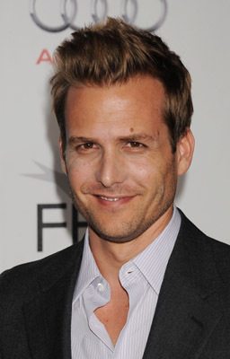
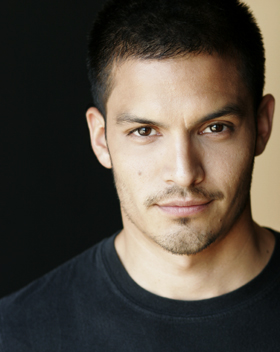
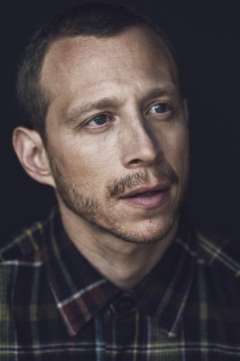
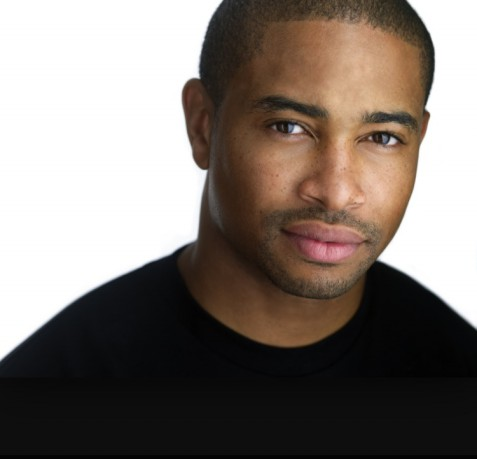
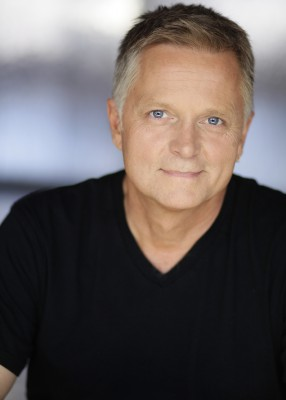
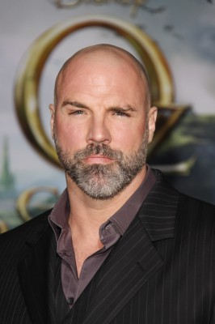
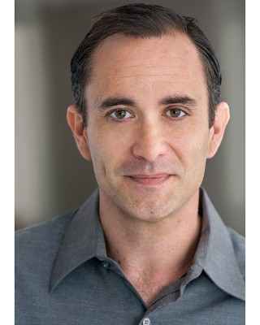
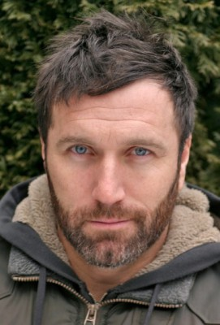
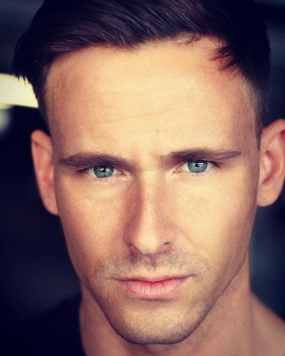

#3701 S.W.A.T.: Firefight


 IMDB-Wertung: 5.4 / 10
IMDB-Wertung: 5.4 / 10  Metascore: 0
Metascore: 0 
Als erstklassiger Antiterrorexperte soll LAPD-Officer Paul Cutler dem S.W.A.T.-Team in Detroit modernste Geiselbefreiungstechniken beibringen. Doch die Lage wird ernst, als die verunglückte Reaktion auf einen Streit mit einer toten Geisel und damit endet, dass ein Profikiller der Regierung besessen darauf ist, Cutler und das gesamte S.W.A.T.-Team auszuschalten.
Jahr: 2011
Dauer: 88 Minuten
FSK:
Land: USA Studio: Sony Pictures Home EntertainmentTonspuren: DTS - ,
Untertitel: Deutsch,
Auflösung: 1080p (1920x1080) Größe: 8089 MB
Genre: Action, Thriller, Krimi
Regisseur: Benny Boom
Drehbuch: Brian Nelson
Soundtrack:
Darsteller:
-  Gabriel Macht als Paul Cutler
 Robert Patrick als Walter Hatch
Robert Patrick als Walter Hatch Carly Pope als Kim Byers
Carly Pope als Kim Byers Giancarlo Esposito als Inspector Hollander
Giancarlo Esposito als Inspector Hollander- Kristanna Loken als Rose Walker
- Matt Bushell als Danny Stockton
-  Nicholas Gonzalez als Justin Kellogg
-  Micah Hauptman als Richard Mundy
- Shannon Kane als Lori Barton
- Gino Anthony Pesi als Wayne Wolport
-  Kevin Phillips als Kyle Watters
-  Dennis North als Captain Simon
- Brad Bukauskas als Slater Harrington
- Yuri Sardarov als Bulgarian Man / Mr. Krav
- Iris Frank als Trish Maywell
-  Tim Holmes als McKittrick
-  Ricky Wayne als Agent Royce
-  Ele Bardha als Agent Ellison
- Jay Hawkins als Buddy #2 , uncredited
- Chameria Law als News Reporter , uncredited
- Patrick Potochick als SWAT Team Driver , uncredited
- Corlandos Scott als Bar Patron , uncredited
- Lauren Mae Shafer als Hostess , uncredited
- Tony Stef'Ano als Bus Patron 1 , uncredited
- Garrett Thierry als Extra , uncredited
- Darcy Leutzinger als Mike / L.A. SWAT
- Tru Hang als Asian Man
- Douglas Lee Cook Jr. als Bomb Squad Leader
- Tony Yayo als Carlos
- Janae Stinson als Watch Commander
- Thomas Taylor als Officer Taylor
- Darius Franklin als LAPD Officer
- Ravyn Lotito-Douglas als Hostage #1
- Arnold Agee als Teen Hostage , uncredited
- Anton Ambrose als Waiter , uncredited
- John P. Chittick als DPD - Officer , uncredited
- Michael B. Clark als Shopper , uncredited
- Will Clarke als DPD SWAT , uncredited
- Katina Crumpton als Hostage , uncredited
- Sabrina Dungan als Stoner at Party , uncredited
- Isaac Ellis als Buddy# 1 , uncredited
-  Steven Hauptman als FBI Agent , uncredited
- Giles Key als Forensic Tech , uncredited
- Antonio L. Miller als Business Executive , uncredited
- Tiffany Osborne als L.A. Girl #1 , uncredited
- Ivan J Puentes als Bus Patron , uncredited
- J.J. Rian als Pedestrian , uncredited
- Ray Daniel Rogers als Forensic Tech , uncredited
- Ashley Siloac als Hostage Girl at Party , uncredited
- Melody Teodoro-Kurtis als Bus Patron , uncredited
Datei: X:\3-Trilogie(N-Z)\S.W.A.T\S.W.A.T. Firefight (2011, FSK, 1920x1080).mkv seit 23.05.2016
Festplatte: HD Collection-3(N-Z)-6(A-Z)
 Alle Filme aus Gruppe '3-Trilogie(N-Z)\S.W.A.T'
Alle Filme aus Gruppe '3-Trilogie(N-Z)\S.W.A.T'